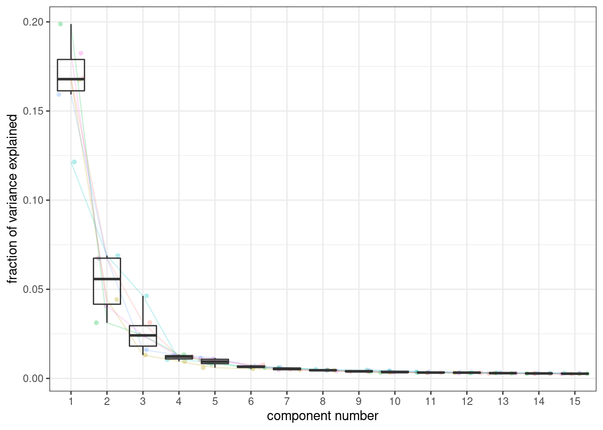
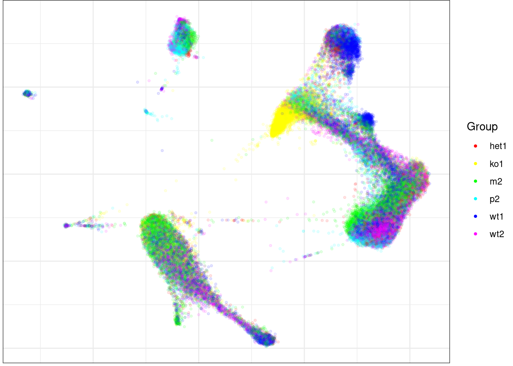
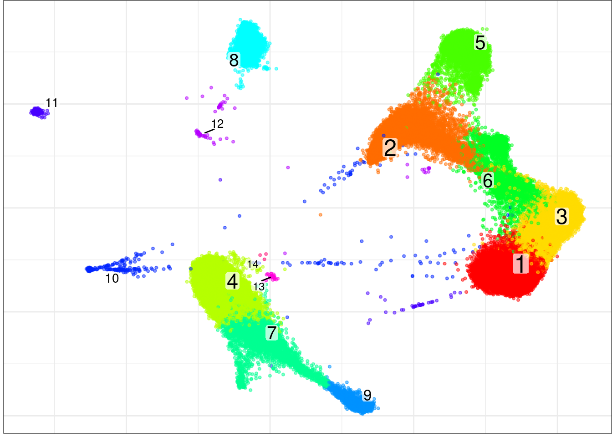
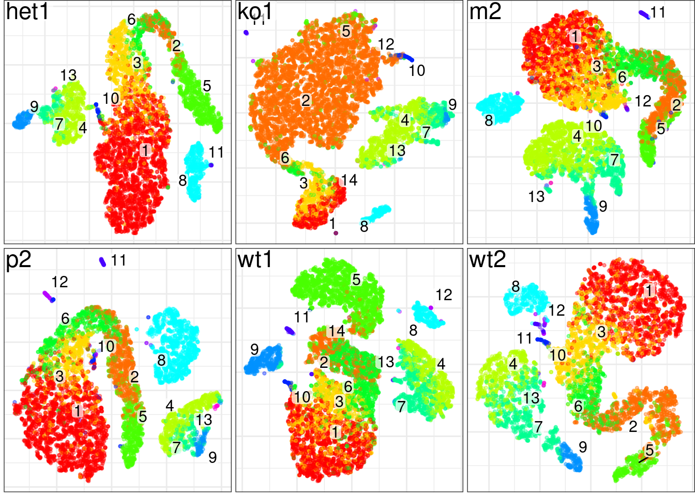
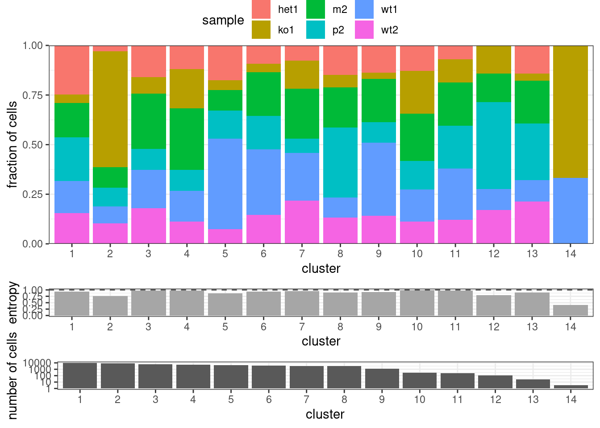

Last updated: 2021-01-07
Checks: 7 0
Knit directory: project-scrnaseq-integration-comparison/
This reproducible R Markdown analysis was created with workflowr (version 1.6.2). The Checks tab describes the reproducibility checks that were applied when the results were created. The Past versions tab lists the development history.
Great! Since the R Markdown file has been committed to the Git repository, you know the exact version of the code that produced these results.
Great job! The global environment was empty. Objects defined in the global environment can affect the analysis in your R Markdown file in unknown ways. For reproduciblity it’s best to always run the code in an empty environment.
The command set.seed(20210107) was run prior to running the code in the R Markdown file. Setting a seed ensures that any results that rely on randomness, e.g. subsampling or permutations, are reproducible.
Great job! Recording the operating system, R version, and package versions is critical for reproducibility.
Nice! There were no cached chunks for this analysis, so you can be confident that you successfully produced the results during this run.
Great job! Using relative paths to the files within your workflowr project makes it easier to run your code on other machines.
Great! You are using Git for version control. Tracking code development and connecting the code version to the results is critical for reproducibility.
The results in this page were generated with repository version b05f3d0. See the Past versions tab to see a history of the changes made to the R Markdown and HTML files.
Note that you need to be careful to ensure that all relevant files for the analysis have been committed to Git prior to generating the results (you can use wflow_publish or wflow_git_commit). workflowr only checks the R Markdown file, but you know if there are other scripts or data files that it depends on. Below is the status of the Git repository when the results were generated:
working directory clean
Note that any generated files, e.g. HTML, png, CSS, etc., are not included in this status report because it is ok for generated content to have uncommitted changes.
These are the previous versions of the repository in which changes were made to the R Markdown (analysis/analysiswithconos.Rmd) and HTML (docs/analysiswithconos.html) files. If you’ve configured a remote Git repository (see ?wflow_git_remote), click on the hyperlinks in the table below to view the files as they were in that past version.
| File | Version | Author | Date | Message |
|---|---|---|---|---|
| html | df38334 | jeprob | 2021-01-07 | Build site. |
| Rmd | d5ff520 | jeprob | 2021-01-07 | wflow_publish(“analysis/analysiswithconos.Rmd”) |
Dataset preprocessing and integration was adapted from this vignette on the Seurat github. The Conos integration followed this vignette by the developers of Conos, subsection: ‘Systematic comparative analysis of human PBMC’.
library(conos)
library(dplyr)
library(pagoda2)
library(Seurat) data_pbmc <- readRDS("./data/wonglab_10x_XLP2_sce_after_scDblFinder.rds")
data_pbmcclass: SingleCellExperiment
dim: 10081 46299
metadata(2): Samples scDblFinder.stats
assays(2): counts logcounts
rownames(10081): ENSG00000237491.AL669831.5 ENSG00000230368.FAM41C ...
ENSG00000198727.MT-CYB ENSG00000273748.AL592183.1
rowData names(3): ID Symbol Type
colnames(46299): het1.AAACCTGAGATGTTAG-1 het1.AAACCTGAGGTGGGTT-1 ...
wt2.TTTGTCATCGCCGTGA-1 wt2.TTTGTCATCTTGACGA-1
colData names(28): Sample Barcode ... scDblFinder.originAmbiguous
cluster
reducedDimNames(2): PCA UMAP
altExpNames(0):head(counts(data_pbmc))6 x 46299 sparse Matrix of class "dgCMatrix"
ENSG00000237491.AL669831.5 . . . . . . . . . . . . . . . . . . . . . . . . . .
ENSG00000230368.FAM41C . . . . . . . . . . . . . . . . . . . . . . . . . .
ENSG00000188976.NOC2L 1 . 1 . . . . . . . . . . . 1 . 1 . . . . . . . . .
ENSG00000188290.HES4 . . . . . . 2 . . . . . . . . . . . . . . . . . . .
ENSG00000187608.ISG15 . 1 . . . . 6 . . . 1 . . . . 1 . . . . . 1 . . . .
ENSG00000186891.TNFRSF18 . . . . . . . . . . . . . . . . . . . . . . . . . .
ENSG00000237491.AL669831.5 . . . . . . . . ......
ENSG00000230368.FAM41C . . . . . . . . ......
ENSG00000188976.NOC2L 1 2 . . . . 1 . ......
ENSG00000188290.HES4 . . . . . . . . ......
ENSG00000187608.ISG15 . . . . . . . . ......
ENSG00000186891.TNFRSF18 . . . . . . . . ......
.....suppressing 46265 columns in show(); maybe adjust 'options(max.print= *, width = *)'
..............................#set up seurat object
pbmc <- as.Seurat(x=data_pbmc)
pbmcAn object of class Seurat
10081 features across 46299 samples within 1 assay
Active assay: RNA (10081 features, 0 variable features)
2 dimensional reductions calculated: PCA, UMAP#split into list of individual datasets
pbmc.panel <- SplitObject(pbmc, split.by = 'Sample')
str(pbmc.panel,1)List of 6
$ het1:Formal class 'Seurat' [package "Seurat"] with 13 slots
$ ko1 :Formal class 'Seurat' [package "Seurat"] with 13 slots
$ m2 :Formal class 'Seurat' [package "Seurat"] with 13 slots
$ p2 :Formal class 'Seurat' [package "Seurat"] with 13 slots
$ wt1 :Formal class 'Seurat' [package "Seurat"] with 13 slots
$ wt2 :Formal class 'Seurat' [package "Seurat"] with 13 slotsNormal Seurat preprocessing steps are NormalizeDate, FindVariableFeatures, ScaleData and run PCA and TSNE for each dataset.
for (i in 1:length(pbmc.panel)){
pbmc.panel[[i]] <- NormalizeData(pbmc.panel[[i]]) %>% FindVariableFeatures() %>% ScaleData() %>% RunPCA(verbose=FALSE) %>% RunTSNE(verbose=FALSE)
}# construct Conos object for the panel of samples
pbmc.con <- Conos$new(pbmc.panel)
pbmc.con #have a look at the Conos object<Conos>
Public:
addSamples: function (x, replace = FALSE, verbose = FALSE)
buildGraph: function (k = 15, k.self = 10, k.self.weight = 0.1, alignment.strength = NULL,
clone: function (deep = FALSE)
clusters: list
correctGenes: function (genes = NULL, n.od.genes = 500, fading = 10, fading.const = 0.5,
embedding: NULL
embedGraph: function (method = "largeVis", M = 1, gamma = 1, alpha = 0.1,
expression.adj: list
findCommunities: function (method = leiden.community, min.group.size = 0, name = NULL,
getClusterCountMatrices: function (clustering = NULL, groups = NULL, common.genes = TRUE,
getDatasetPerCell: function ()
getDifferentialGenes: function (clustering = NULL, groups = NULL, z.threshold = 3,
getJointCountMatrix: function (raw = FALSE)
graph: NULL
initialize: function (x, ..., n.cores = parallel::detectCores(logical = FALSE),
misc: list
n.cores: 8
override.conos.plot.theme: FALSE
pairs: list
plotClusterStability: function (clustering = NULL, what = "all")
plotGraph: function (color.by = "cluster", clustering = NULL, groups = NULL,
plotPanel: function (clustering = NULL, groups = NULL, colors = NULL, gene = NULL,
propagateLabels: function (labels, method = "diffusion", ...)
samples: list
Private:
adjustTheme: function (theme)
updatePairs: function (space = "PCA", data.type = "counts", ncomps = 50, n.odgenes = 1000, str(pbmc.con$samples,1)List of 6
$ het1:Formal class 'Seurat' [package "Seurat"] with 13 slots
$ ko1 :Formal class 'Seurat' [package "Seurat"] with 13 slots
$ m2 :Formal class 'Seurat' [package "Seurat"] with 13 slots
$ p2 :Formal class 'Seurat' [package "Seurat"] with 13 slots
$ wt1 :Formal class 'Seurat' [package "Seurat"] with 13 slots
$ wt2 :Formal class 'Seurat' [package "Seurat"] with 13 slotsWe now build the joint graph:
pbmc.con$buildGraph(k=15, k.self=5, space='PCA', ncomps=30, n.odgenes=2000, matching.method='mNN', metric='angular', score.component.variance=TRUE, verbose=TRUE).Next, we can visualize the estimated amount of variance explained by successive PCs:
plotComponentVariance(pbmc.con, space='PCA')
| Version | Author | Date |
|---|---|---|
| df38334 | jeprob | 2021-01-07 |
We can see that the first PC already explaines a large fraction of the variance. The second and the third PC also explain a much higher fraction of variance than the remaining ones.
We can now use the graph to find and visualize global clusters. Here, we use the Leiden community detection.
pbmc.con$findCommunities(method=leiden.community, resolution=0.8)As a next step, the joint graph can be used to visualize the integration of datasets and the clustering.
pbmc.con$plotGraph(color.by='sample', mark.groups=FALSE, alpha=0.1, show.legend=TRUE)Estimating embeddings.
| Version | Author | Date |
|---|---|---|
| df38334 | jeprob | 2021-01-07 |
One can observe that the data is integrated in a joint TSNE space and cells do not cluster by dataset.
pbmc.con$plotGraph(alpha=0.5)
| Version | Author | Date |
|---|---|---|
| df38334 | jeprob | 2021-01-07 |
We find that there are 14 clusters identified in total.
Next, the joint clustering for each panel are plotted, where cell labels obtained from the joint clustering are added in the original TSNE embedding.
pbmc.con$plotPanel(font.size=4)
| Version | Author | Date |
|---|---|---|
| df38334 | jeprob | 2021-01-07 |
We find different amounts of cell types in the individual datasets. To have a closer look at the composition of the individual datasets, we plot cluster barplots for the individual datasets.
plotClusterBarplots(pbmc.con, legend.height = 0.1)
| Version | Author | Date |
|---|---|---|
| df38334 | jeprob | 2021-01-07 |
Many interesting things can be observed in this plot. It is noteable that most of the cells in ko1 belong to cluster 2. Furthermore, the distribution of cells to clusters differs from wt1 to wt2, judged by eye. Cluster 12 is not present in the dataset het1.
Further downstream analysis such as gene expression visualization or hierarchical community structure generation would be possible with Conos. For more information visit this vignette.
sessionInfo()R version 4.0.3 (2020-10-10)
Platform: x86_64-pc-linux-gnu (64-bit)
Running under: Ubuntu 20.04.1 LTS
Matrix products: default
BLAS: /usr/lib/x86_64-linux-gnu/blas/libblas.so.3.9.0
LAPACK: /usr/lib/x86_64-linux-gnu/lapack/liblapack.so.3.9.0
locale:
[1] LC_CTYPE=en_US.UTF-8 LC_NUMERIC=C
[3] LC_TIME=de_CH.UTF-8 LC_COLLATE=en_US.UTF-8
[5] LC_MONETARY=de_CH.UTF-8 LC_MESSAGES=en_US.UTF-8
[7] LC_PAPER=de_CH.UTF-8 LC_NAME=C
[9] LC_ADDRESS=C LC_TELEPHONE=C
[11] LC_MEASUREMENT=de_CH.UTF-8 LC_IDENTIFICATION=C
attached base packages:
[1] parallel stats4 stats graphics grDevices utils datasets
[8] methods base
other attached packages:
[1] SingleCellExperiment_1.12.0 SummarizedExperiment_1.20.0
[3] Biobase_2.50.0 GenomicRanges_1.42.0
[5] GenomeInfoDb_1.26.2 IRanges_2.24.1
[7] S4Vectors_0.28.1 BiocGenerics_0.36.0
[9] MatrixGenerics_1.2.0 matrixStats_0.57.0
[11] Seurat_3.2.3 pagoda2_1.0.0
[13] dplyr_1.0.2 conos_1.3.1
[15] igraph_1.2.6 Matrix_1.3-0
[17] workflowr_1.6.2
loaded via a namespace (and not attached):
[1] N2R_0.1.1 circlize_0.4.11 plyr_1.8.6
[4] lazyeval_0.2.2 splines_4.0.3 entropy_1.2.1
[7] listenv_0.8.0 scattermore_0.7 ggplot2_3.3.3
[10] urltools_1.7.3 digest_0.6.27 htmltools_0.5.0
[13] viridis_0.5.1 magrittr_2.0.1 RMTstat_0.3
[16] tensor_1.5 cluster_2.1.0 ROCR_1.0-11
[19] ComplexHeatmap_2.7.4 globals_0.14.0 R.utils_2.10.1
[22] sccore_0.1.1 colorspace_2.0-0 ggrepel_0.9.0
[25] xfun_0.19 RCurl_1.98-1.2 crayon_1.3.4
[28] jsonlite_1.7.2 spatstat_1.64-1 spatstat.data_1.7-0
[31] brew_1.0-6 survival_3.2-7 zoo_1.8-8
[34] glue_1.4.2 polyclip_1.10-0 gtable_0.3.0
[37] zlibbioc_1.36.0 XVector_0.30.0 leiden_0.3.6
[40] DelayedArray_0.16.0 GetoptLong_1.0.5 Rook_1.1-1
[43] future.apply_1.7.0 shape_1.4.5 abind_1.4-5
[46] scales_1.1.1 miniUI_0.1.1.1 Rcpp_1.0.5
[49] viridisLite_0.3.0 xtable_1.8-4 clue_0.3-58
[52] reticulate_1.18 rsvd_1.0.3 htmlwidgets_1.5.3
[55] httr_1.4.2 RColorBrewer_1.1-2 ellipsis_0.3.1
[58] ica_1.0-2 farver_2.0.3 pkgconfig_2.0.3
[61] R.methodsS3_1.8.1 uwot_0.1.10 deldir_0.2-3
[64] labeling_0.4.2 tidyselect_1.1.0 rlang_0.4.10
[67] reshape2_1.4.4 later_1.1.0.1 munsell_0.5.0
[70] tools_4.0.3 generics_0.1.0 ggridges_0.5.2
[73] evaluate_0.14 stringr_1.4.0 fastmap_1.0.1
[76] yaml_2.2.1 goftest_1.2-2 knitr_1.30
[79] fs_1.5.0 fitdistrplus_1.1-3 purrr_0.3.4
[82] RANN_2.6.1 dendextend_1.14.0 pbapply_1.4-3
[85] future_1.21.0 nlme_3.1-151 whisker_0.4
[88] mime_0.9 R.oo_1.24.0 compiler_4.0.3
[91] rstudioapi_0.13 plotly_4.9.2.2 png_0.1-7
[94] spatstat.utils_1.17-0 tibble_3.0.4 stringi_1.5.3
[97] lattice_0.20-41 vctrs_0.3.6 pillar_1.4.7
[100] lifecycle_0.2.0 triebeard_0.3.0 lmtest_0.9-38
[103] GlobalOptions_0.1.2 RcppAnnoy_0.0.18 bitops_1.0-6
[106] data.table_1.13.6 cowplot_1.1.1 irlba_2.3.3
[109] httpuv_1.5.4 patchwork_1.1.1 R6_2.5.0
[112] promises_1.1.1 KernSmooth_2.23-18 gridExtra_2.3
[115] parallelly_1.23.0 codetools_0.2-18 MASS_7.3-53
[118] rprojroot_2.0.2 rjson_0.2.20 withr_2.3.0
[121] sctransform_0.3.2 GenomeInfoDbData_1.2.4 mgcv_1.8-33
[124] grid_4.0.3 rpart_4.1-15 tidyr_1.1.2
[127] rmarkdown_2.6 dendsort_0.3.3 Cairo_1.5-12.2
[130] Rtsne_0.15 git2r_0.27.1 shiny_1.5.0
[133] base64enc_0.1-3